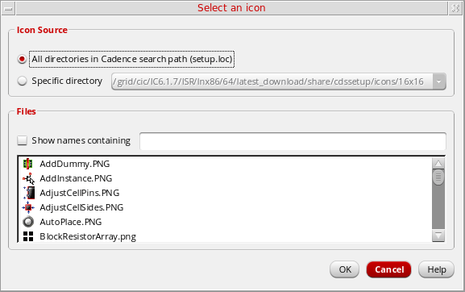

Selecting an Icon for a Library Display Attribute
You can select icons for library display attributes. The Library Manager uses the Cadence Search File mechanism (CSF) to find icons—both Cadence application icons as well as any custom icons that you or your site have added.
Specifically, the Library Manager looks for the following two directories:
icons/library/16x16
icons/16x16
For every location in the setup.loc file, the following subdirectories are searched:
.cadence
. (the exact location)
cdssetup
Also, from every location, the first subdirectory that contains an icons directory is used. For example, if an icons directory is found in locationA/.cadence, then locationA and locationA/cdssetup are not searched.
If multiple definitions are found for an icon, that is, a file of the same base name is found in multiple locations, the definition from the location that has higher precedence in the setup.loc file is used, as per CSF rules.
If you create custom icons, place them in the following sub-directory of any directory that is listed in your setup.loc file, such as $HOME:
icons/library/16x16
If an icon is defined in both an icons/16x16 directory and an icons/library/16x16 directory, the definition in the icons/library/16x16 directory is used.
To select an icon for a library display attribute,
- In the Display Attribute form, select an attribute.
-
In the Display Libraries section, select Using Icon, then click Select.
The Select an icon form appears. -
In the form’s Icon Source field, select the directories from which you want to display icons in the Files list.
Until you add custom icons to other locations in yoursetup.locfile, the only directories listed in this field are those containing Cadence application icons, such as the your_install_dir/share/cdssetup/icons/16x16icon directory. -
Select Show names containing and specify a pattern to filter icon file names.
Only the file names containing the pattern are displayed. For example,ibrdisplays only those file names that containibr, such asNewLibrary.png. -
From the Files list, select the icon that you want to use for the attribute.
You can place your cursor over an icon file name to view the directory from which it is obtained. - Click OK.
The icon you selected is displayed next to the Using Icon field in the Display Settings form. The Preview field also displays the icon next to the sample library name.
Related Topics
Return to top